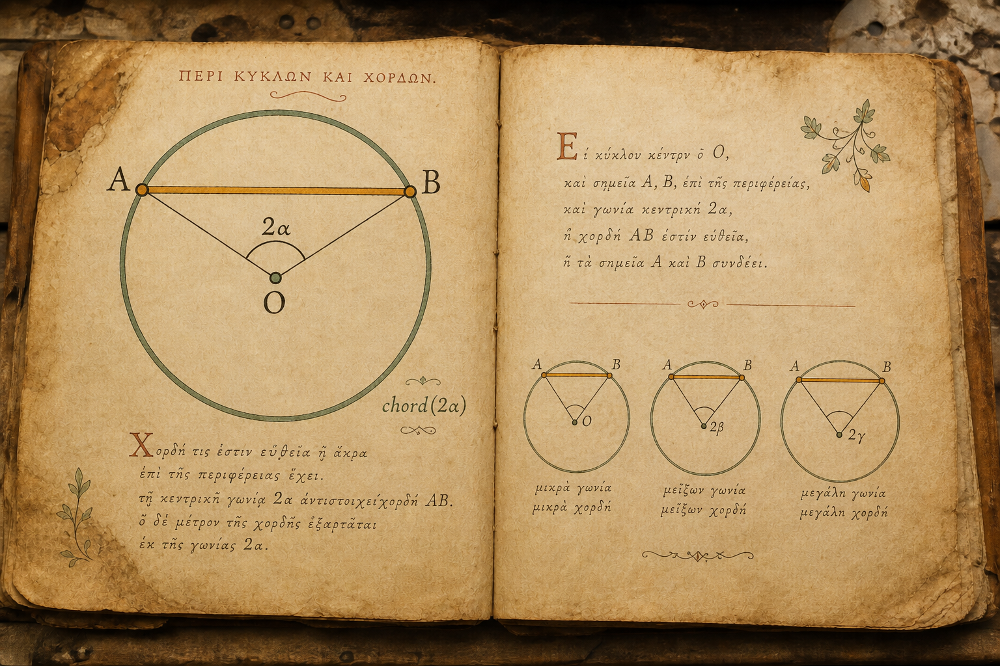
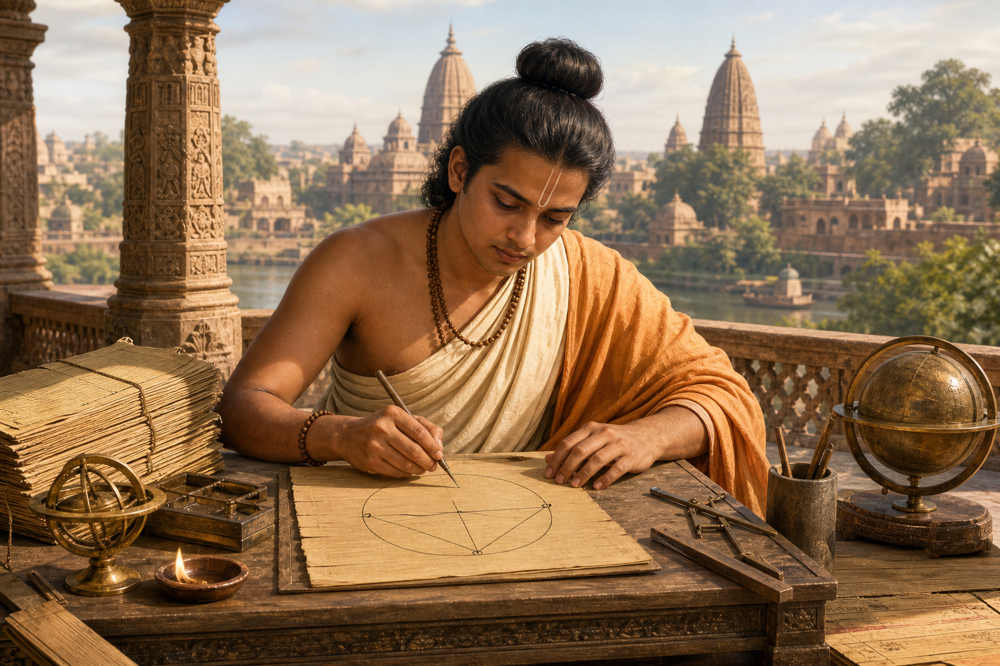
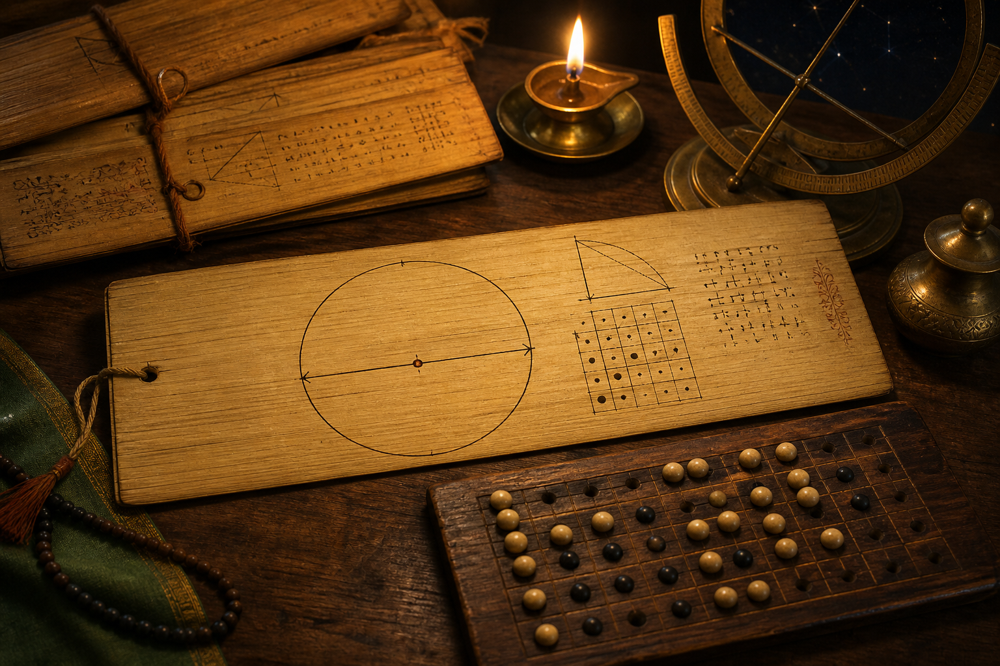
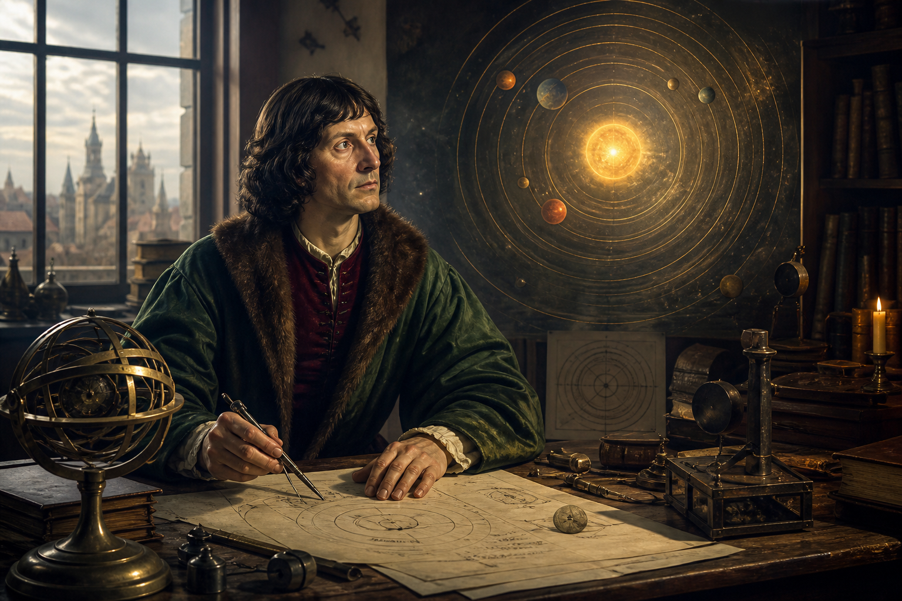
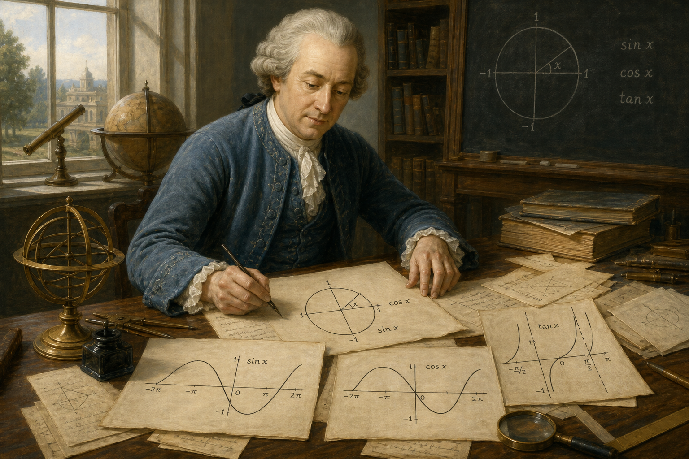

Ngôn ngữ mà nhân loại phải mất đến 2000 năm để xây dựng và chuẩn hóa thành hình thức giải tích ngày hôm nay.
Đây là câu chuyện về một công cụ vĩ đại mà nhân loại đã cùng nhau gầy dựng suốt hơn 2000 năm — mục đích tối thượng là để đo đạc những thứ chúng ta không bao giờ có thể chạm tay tới.
”Đây chính là bài toán thực tế đã thúc đẩy sự ra đời của bộ môn lượng giác. Không phải xuất hiện từ bàn giấy phòng nghiên cứu hay bảng đen trường học.
Người Ai Cập nhận ra một nguyên lý kỳ diệu: tại cùng một thời điểm dưới ánh mặt trời, tỉ lệ chiều cao và chiều dài bóng của mọi vật thể trên cát luôn không đổi.
Chiều cao Kim tự tháp = Chiều dài bóng thực tế × (1 / Bóng cây gậy 1m). Họ chưa gọi đó là lượng giác, nhưng họ đang ứng dụng nó.

Nhà thiên văn học Menelaus vẽ các tam giác cầu trên bầu trời sao bao quanh Trái Đất. Nhưng họ không tính bằng Sin hay Cos. Công cụ của họ là chord (dây cung) — nối 2 đầu mút góc trên đường tròn.


Nhà toán học trẻ tuổi Aryabhata nhận ra: nếu chỉ dùng nửa dây cung tương ứng với một nửa góc chính diện, việc tính toán hình học phẳng sẽ đơn giản hơn rất nhiều.
Ông gọi nó là jya-ardha (nửa dây cung), viết gọn thành jya.
Và đó là khoảnh khắc hàm Sin ra đời.
jya chính thức thay thế toàn dây cung, trở thành nền tảng giải
tích của lượng giác hiện đại.
Khi châu Âu rơi vào Thời kỳ Đen tối, các học giả Hồi giáo tại Baghdad đã tổ chức dịch thuật, lưu trữ và nhân rộng kho tàng toán học của Hy Lạp và Ấn Độ.
Nasir al-Din al-Tusi viết cuốn sách đầu tiên đưa lượng giác tách rời hoàn toàn khỏi khoa học quan sát bầu trời, trở thành một chuyên ngành toán học độc lập.

Học giả Regiomontanus biên soạn cuốn sách giáo khoa lượng giác đầu tiên bằng tiếng Latin tại châu Âu. Dựa vào các công thức lượng giác này, Copernicus tính toán chính xác quỹ đạo của các hành tinh.
Ông đưa ra kết luận mang tính cách mạng: Trái Đất quay quanh Mặt Trời, thách thức trực tiếp niềm tin tôn giáo thời bấy giờ.

Đến thế kỷ 18, các ký hiệu lượng giác vô cùng hỗn loạn ở từng quốc gia (nơi dùng
Sn, nơi viết sin., SIN...).
Năm 1748, nhà toán học lỗi lạc Leonhard Euler chuẩn hóa toàn bộ các ký hiệu toán học lượng giác trong cuốn sách kinh điển của mình.
sin x, cos x, tan x giúp toán học
lượng giác trở thành một ngôn ngữ chung toàn cầu.
Không còn chỉ là đo tháp, đo núi hay lập bản đồ chòm sao, ngày nay hàm lượng giác là mã nguồn cốt lõi vận hành toàn bộ thế giới công nghệ thông tin số.
Và giờ đây, tri thức đúc kết vĩ đại ấy đã được chuyển giao nguyên vẹn đến tay em.